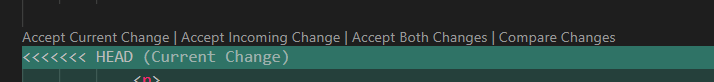

What is merge conflict and to solve them
Intro
Aqui iremos aprender a como lidar com conflitos durante o merge.
Aqui iremos aprender a como lidar com conflitos durante o merge.
Aqui iremos supor que duas pessoas estejam trabalhando em um mesmo arquivo do mesmo projeto. Dessa forma o git nao ira conseguir fazer o merge automaticamente, ele ira nos fazer tomar uma decissao, se desejamos fazer esse merge manualmente ou se iremos aceitar apenas uma das alteracoes.
Para esse exemplo iremos criar uma nova branch iremos chamar de new/feature.
Para criar git branch new/feature. E entramos nela com git checkout new/feature.
Apos fazermos algumas alteracoes novamente em nosso codigo depois de entrado em nossa nova branch e salvar com o git add . e git commit -m"message".
Apos isso voltaremos para nosso main e fazer algumas alteracoes em nosso main, iremos fazer isso para verificar o conflito. Feito isso iremos dar o git add . e git commit -m "".
Apos feito os passos acima iremos dar o git merge. Ficando da seguinte forma: git merge new/feature
Feito isso iremos ver que em nosso VSCode teremos algumas opcoes para aceitarmos. Teremos opcoes como aceitar "Aceitar Alteracao Atual | Aceitar Alteracao de Entrada | Aceitar Ambas Alteracoes | Comparar Alteracoes"
Se aceitarmos as "Alteracoes Atual", iremos ignorar todas as alteracoes feitas em nossa branch new/feature
"Aceitar Alteracao de Entrada": nela iremos substituir tudo que temos na main e utilizar tudo que foi feito apenas em nosso branch new/feature.
"Aceitar Ambas Alteracoes": nela iremos aceitar ambas as alteracoes e podemos fazer as alteracoes manualmente. (Ela que iremos clicar).

Pode haver casos onde havera duplicacoes de nosso codigo, podemos estar eliminando essas duplicacoes. Apos feito isso podemos fazer o git add . para nossa nova alteracao realizada. Iremos visualizar que estamos em um git main com conflito: